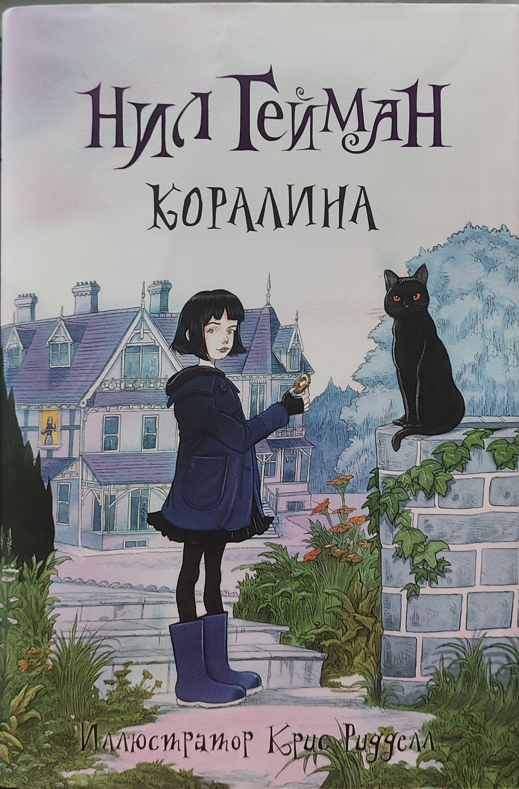

Наведите камеру телефона на обложку книги — и её герои оживут прямо у вас в руках. Раскройте историю одним касанием.
Понадобится доступ к камере. Работает лучше при хорошем свете и устойчивом наведении на книгу.
Книги, обложки которых распознаёт приложение. Наведите камеру на обложку — и модель оживёт.

Скоро появятся новые книги. Следите за обновлениями коллекции.
«Коралина» — история о девочке, которая переезжает с родителями в старый дом и однажды находит дверь, ведущую в другой мир. По ту сторону её ждёт Другая Мать — зловещая копия её настоящей мамы с чёрными пуговицами вместо глаз.
Когда Другая Мать похищает настоящих родителей, Коралине предстоит проявить храбрость и смекалку, чтобы вернуть их и вырваться из жуткого мира, где всё кажется лучше, но всё — ложь.
Это тёмная сказка о мужестве, выборе и о том, что настоящая храбрость — делать правильное, даже когда очень страшно.
Нил Гейман — британский писатель, один из самых известных авторов современного фэнтези. Работает на стыке литературы, графических романов и кино, одинаково успешен и у детской, и у взрослой аудитории.
Среди его произведений — романы «Американские боги», «Никогде», «Сыновья Ананси», «История с кладбищем», сказка «Коралина», а также серия комиксов «Песочный человек» (The Sandman), которая переопределила жанр.
Лауреат премий «Хьюго», «Небьюла», Брэма Стокера, Карнеги и Ньюбери. По его книгам сняты фильмы и сериалы, а «Коралина» в 2009 году получила культовую экранизацию в технике покадровой анимации.